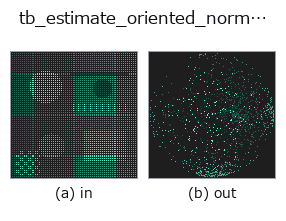

typed op• Data kinds: points → points
• Call: fullseye.apply(img, "tb_estimate_oriented_normals", a=0.5, b=0.5) (the 2-D model is one image plus two scalar knobs a,b∈[0,1])

*The figure is the actual output on a synthetic 128×128 input. Left: input, right: output. Point clouds are drawn as a top-down scatter (brightness = z), 1-D series as a line plot, volumes as the maximum-intensity projection along z, videos as the middle frame, complex images as magnitude; return values that are not pictures are shown as the values themselves.*
Sweeping knob a (0.1 / 0.5 / 0.9, the other knob at its default):
▸ tb_estimate_oriented_normals: knob a sweep (docs site)
*Knob b does not change the output (measured: identical at 0.1 / 0.5 / 0.9).*
Stages (the ops that come before → this op, left to right):
▸ tb_estimate_oriented_normals: stages (docs site)
On other images (synthetic scene / photo / coins. Top row: inputs, bottom row: their outputs. Knobs at default):
▸ tb_estimate_oriented_normals: other inputs (docs site)
A combination of PCA normal estimation and Hoppe global orientation propagation. → (N,3) oriented unit normals.
> The detailed description below is the original text — the summary and the headings are translated.
:func:estimate_normals(向き未定)→ :func:orient_normals(MST 伝播)を通す。
閉曲面なら全点外向き、平面なら全点同一半球にそろう。得た法線を
`curvature3d.shape_index` に渡すと凹/凸符号が正しく出る。
Args:
points: (N,3) の点群。
k: PCA 近傍数と kNN グラフ近傍数(共通)。
seed_dir: 大域基準向き (3,)。None なら重心から外向き。
Returns:
(N,3) の大域一貫・向き付き単位法線。
2-D 進化レジストリへ橋渡しした 3d の op `estimate_oriented_normals。実装は同じで、呼び出し規約だけ op(v, a, b) に合わせてある。a が k(既定 20)を振る。b` は未使用。
• Sample-data catalog (download URLs / licences) — 2-D uses skimage.data (BSD/public domain) plus synthetic images; 3-D lists download URLs for real data sources (Stanford, PDS, …).
• Operator provenance and references — the sources of the research/methods this op family came from.
The program below has been verified to run (same input as the figure). In Studio's help this block becomes buttons that load and run it on the spot.
img_to_points 0.50 0.50 tb_estimate_oriented_normals 0.50 0.50
▸ Load this pipeline · Load & run
The examples below call the underlying ledger op estimate_oriented_normals. This bridge op is the same implementation adapted to the fn(v, a, b) convention, so the behaviour carries over unchanged (only the call form differs).
• oriented_normals — py -3.11 examples_3d/oriented_normals.py
points as input)identity · tb_points_to_voxel · tb_estimate_point_normals · tb_iss_keypoints · tb_project_points · tb_render_point_depth · tb_statistical_outlier_removal · tb_radius_outlier_removal
typed)tb_points_to_voxel · tb_estimate_point_normals · tb_iss_keypoints · tb_project_points · tb_render_point_depth · tb_statistical_outlier_removal · tb_radius_outlier_removal · tb_voxel_grid_downsample
*Provenance: ops.py — 2D operator registry. This per-op note is generated by tools/opdocs.py md (do not hand-edit).*
© 2026 Kazufumi Furuse — Fullseye operator documentation. Licensed under Apache-2.0.
{kind=link}
{kind=link}
{kind=link}